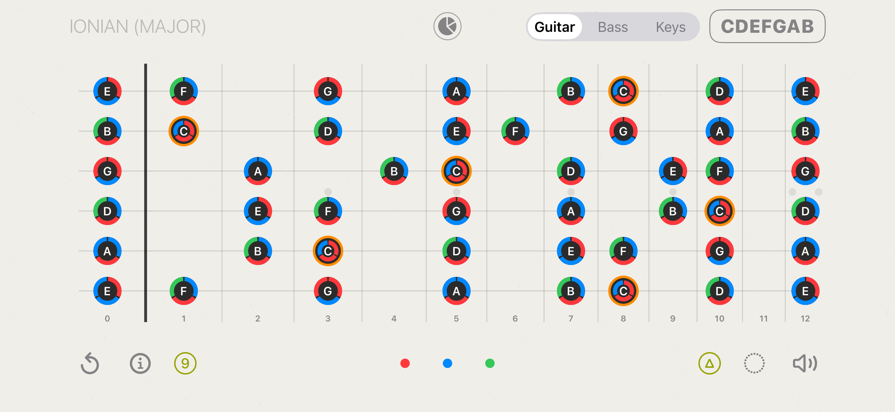
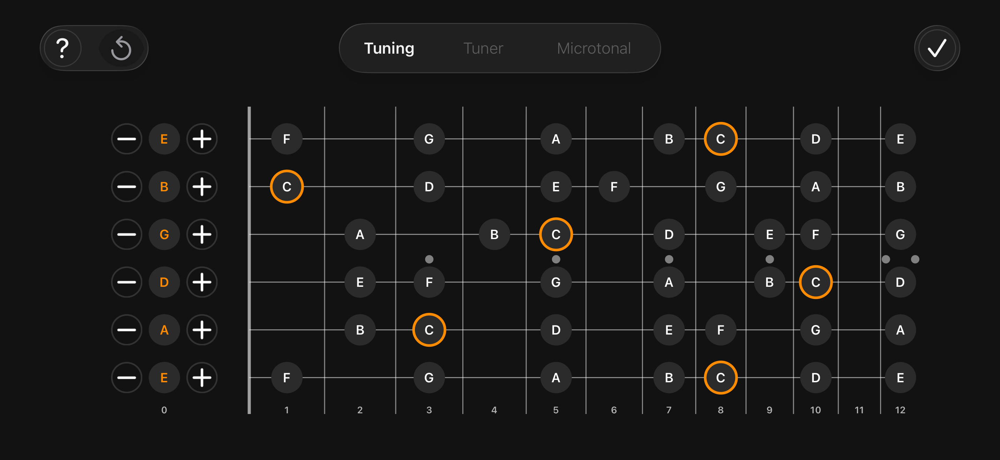
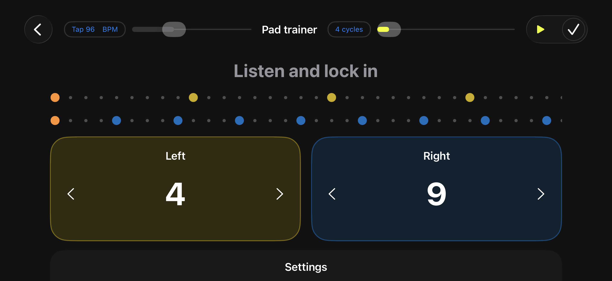

Documentation
User Guide
Every module of CDEFGAB Music Toolkit, in the order you’ll meet it.
Tip before you start: almost every screen has a “?” button that runs an interactive tour, highlighting each control right where it sits. It’s the fastest way to learn a screen — this guide is the reference you come back to.
Contents
1. Getting started
The app runs in landscape — that’s deliberate, since a guitar neck is a wide thing and squeezing it into a portrait screen makes every dot tiny.
The main screen is the home base. Along the top you’ll find the current scale name, the instrument switcher (Guitar / Bass / Keys) and the CDEFGAB chip. Along the bottom sit reset, info, the interval strip and the sound toggle.
2. Building scales and modes
Tap notes directly on the neck to build a scale. As soon as your selection matches something known, the app names it at the top left — for example Aeolian (natural minor).
- Tonic — the root note is highlighted with an orange ring. Everything (degrees, chord suggestions) is measured from it.
- Transpose — move the whole pattern to another key; the shape and the relationships stay intact.
- Interval strip — the bottom strip shows the distances between the notes, not just the notes. It collapses on its own after a few seconds of inactivity; tap to expand it, swipe up to collapse it immediately.
- Note names or degrees — the toggle next to the instrument switch cycles the labels between note names (A, B, C…), scale degrees (1, 2, 3…) and chord rings.
- Reset — the ↺ button clears the board.
3. Guitar, bass and keys
The Guitar / Bass / Keys switcher re-maps your current scale onto a different instrument. The theory doesn’t change — only the geometry under your fingers does. It’s the quickest way to see that a mode is one idea, not three separate shapes to memorise.

Left-handed mode mirrors the fretboard for left-handed players; the app remembers the choice everywhere, including lessons.
4. Finding the scale you played
Stumbled onto something good and don’t know what it is? Select those notes and open Matching Scales. The app searches its library for every scale and mode that contains your notes and ranks them, suggesting likely tonics.
- Scale Library — browse the full catalogue and apply any scale or mode directly.
- Scale 2 — hold a second selection alongside the first to compare two scales on the same neck and see exactly which notes differ.
5. Chord mode on the neck
Switch the neck labels to chord rings and every note shows a coloured ring indicating which chords of the current key it belongs to. A strip of chord chips appears at the bottom.
- Tap a chip to display that chord’s shape on the neck — and hear its arpeggio.
- Tap the same chip again to cycle through the other chords in that group.
- Drag the shape along the neck to move it to another voicing; each new voicing plays as you land on it.
- △ / 7 / 9 badges switch between triads, sevenths and ninths.
- Sound button — with a chord selected it previews that chord’s arpeggio; with no chord selected it plays the arpeggio of the current scale.
Chord changes are silent when the sound is switched off — the speaker button is the master switch for the neck’s audio.
6. Chords & Harmony
This section has three tabs.
Chords
A chord builder: choose a root, quality, seventh, add-ons, and read the resulting shape on the fretboard or on the keys. Alternate voicings are listed so you can pick the one your hand likes.
Harmony
The circle of fifths, key relationships and progression tools. Build a progression and play it back; the Piano / Guitar toggle switches how the chords are voiced, so you can hear the same progression as a keyboard player or a guitarist would voice it.
Learn
- Learn Chords — the step-by-step chord course (see below).
- Harmony Lessons — 17 short theory lessons with quizzes.
- Chord Reference — browse every chord from A to Z.
7. The chord course (with microphone)
Each chord lesson has three stages.
- Show — the shape, a teaching tip, and “Hear it” to play the target sound. Tap → when you’ve got the shape under your fingers.
- Listen — you play, the app listens. Each note of the chord turns green on the neck as it rings, grows with how loud it is, and draws a small loudness bar. When the whole chord rings cleanly for a moment, the stage passes by itself.
- Chord changes — a metronome alternates between this chord and the previous one. Play each change cleanly and in time; a run of correct changes passes the stage. The tempo slider sets the speed.
The mic can’t hear you? Every listening stage has a → button that moves you on manually. A noisy room or a quiet pickup will never lock you out of the course.
Detection works best with a reasonably clean sound: let every string ring, avoid muting with your palm, and keep the phone somewhere it can hear the instrument rather than the floor.
8. Tuner

- Chromatic mode — play a string and the tuner names the note and shows how far off you are.
- Microtonal mode — aim at a target that isn’t on the 12-tone grid, for alternate temperaments and non-Western tunings.
- Reference tone — pick a target note and the app plays it. Confirming with the checkmark stops the tone; the speaker button starts it again.
- Custom tunings — set each string individually for drop, open and other alternate tunings; the whole app follows the tuning you set.

9. Practice
A library of guided exercises for both hands — chromatic “spider” patterns, alternate picking, finger gyms, scale runs and more. Open an exercise and you get a player:
- BPM — set the tempo; start slower than feels necessary.
- Loop — repeat until you stop, for building muscle memory.
- Sound — play a short tone on each step, or run it silently.
- Progress slider — scrub to any step of the exercise.
Follow the highlighted note on the neck (or the keys in Keys mode) and play it in time with the metronome.
10. Rhythm

- Sequencer — build patterns with accents across several layers.
- Polyrhythms and polymeters — run layers of differing lengths against each other and hear how they drift and realign.
- Metronome — a plain click when that’s all you need.
- Tap trainer — tap the pads along with the beat and get graded on how tightly you land. The count-in gives the same feedback as the exercise itself, so you can settle in before it counts.
11. Career and gigs
Career mode turns practice into a path: you start in a bedroom and work toward a stadium. Each venue sets a challenge built on a real exercise from the practice library.
- Press Start and play the exercise along with the beat.
- The microphone grades your timing — each attack that lands on the beat counts.
- A clean loop is a pass; collect the required passes and the gig completes on its own.
- Tempo is adjustable, and Finish Gig always lets you close out manually.
Completing gigs earns reputation and Riffs, the in-app currency you can spend in the shop. Your skill profile fills in as you practise across the app.
12. Troubleshooting
The app doesn’t react to my playing
- Check microphone permission: iOS Settings → Privacy & Security → Microphone → CDEFGAB.
- Move the device closer to the instrument and away from noise sources.
- Let the strings ring — muted or very short notes are hard to analyse.
- You can always continue manually with → or Finish Gig.
I hear nothing
- Check the speaker button on the main screen — it’s the master sound switch.
- Check the iOS silent switch and the volume.
- In the practice player, the Sound option controls step tones separately.
Chord detection says “almost”
That means the app hears sound but not the whole chord — usually one string is muted or buzzing. Watch which note on the neck stays grey: that’s the one that isn’t ringing.
Still stuck? Contact support — a human answers.
© 2026 CDEFGAB. All rights reserved.